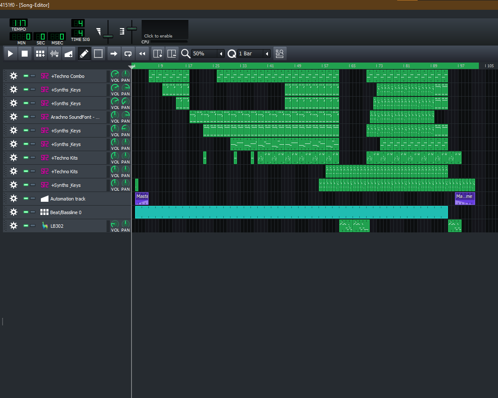
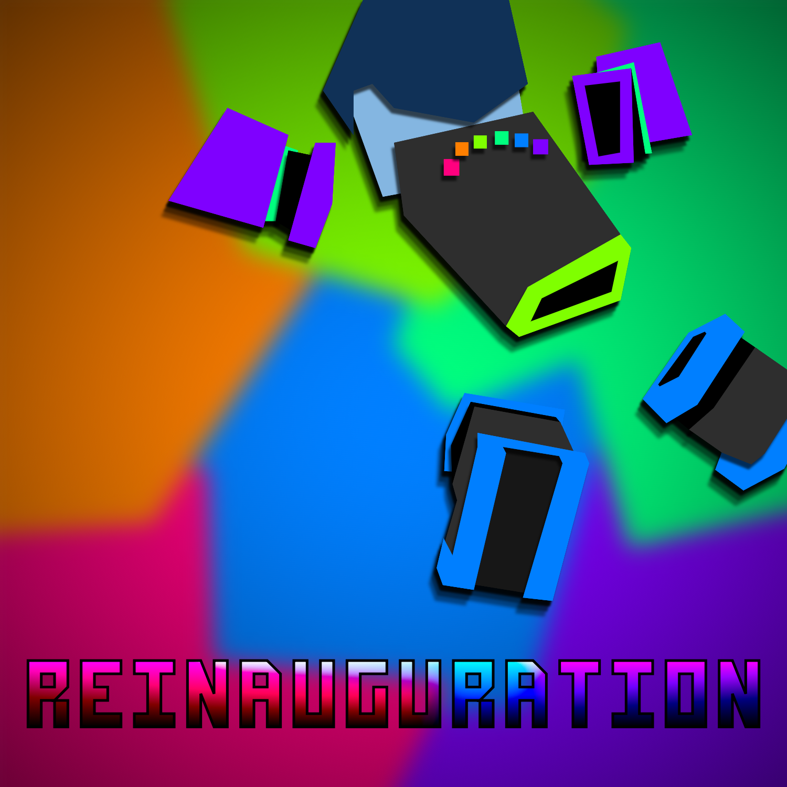
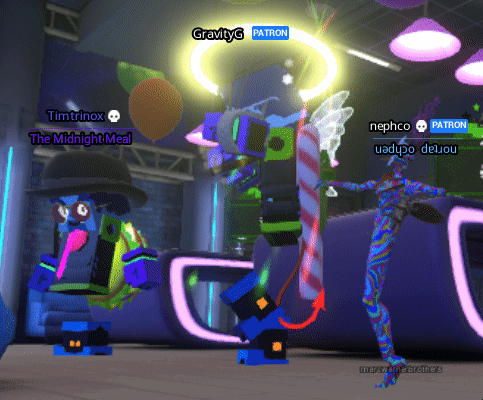

Tim's Life in Music Production
So, where do I begin?
I suppose I should begin in 2015, when I finally managed to find a little piece of software that goes by the name "Linux MultiMedia Studio". This Digital Audio Workstation or DAW for short was the original source of my exploration into the scene of music production. The best deciding factor was that it was free.
Fast forwarding through 5 years and a lot of me posting experimental tracks to my Bandcamp, I come up with "Pipeline". Originally intended as a single, but later released as part of "HEAT" to pad out the EP, I labeled it as the magnum opus of everything I have learned in LMMS up to that point. In a way, I peaked for a while. I did end up making some notable songs since then, but I genuinely felt like a hermit crab needing a new shell, so to speak. I needed more tools.
 Well, it just so happened that there was quite an opportune way to move up in the world. Recently, Cakewalk Sonar went under a rebrand into Cakewalk by Bandlab and in the process, became completely free of charge. I was astounded; this full-featured DAW, FREE!?
Well it turns out, there was a tiny catch: I had no idea how to use the software, not to mention it came with barely any instrument plugins out of the box. I ended up dropping it for about a month until I got a new MIDI controller keyboard with some birthday money. I experiment for a few months, and end up making enough tracks to fill up an entire album. I name the album "Reinauguration" to symbolize that I'm back in the game, and better than ever.
To take away from all this, I came up with a philosophy. I realized that I never really used music to tell a story like most others do. I use it to paint a picture. To plot a scene. To construct a setting where an event takes place. I often think to myself; what kind of background music would perfectly suit what I'm currently up to?

So after all that, what's next? Honestly, I don't really know. Here lately I've been letting my music production take a backseat for a little while as I focus on other creative endeavors. A lot of them centering around Tower Unite and all the wonderful friends I've ended up making on there. The game's really given me a healthy outlet on things I've been making. I've even found others with a similar taste in incredibly niche music genres as I am. With that in mind, I am genuinely optimistic for the future and whatever may come of it.